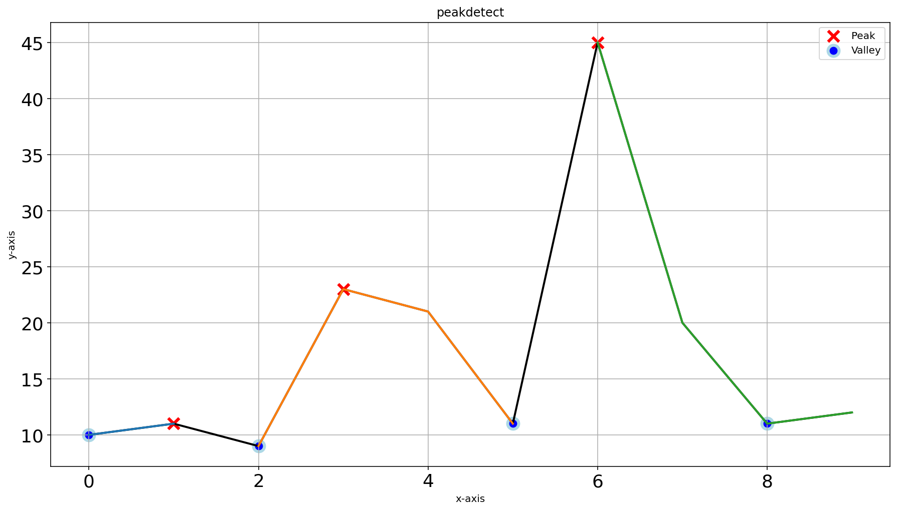

Quick Examples
This section provides comprehensive examples demonstrating the capabilities of the findpeaks library for both 1D and 2D data analysis. Each example showcases different detection methods, preprocessing techniques, and visualization options using functions like findpeaks.findpeaks.findpeaks.fit(), findpeaks.findpeaks.findpeaks.plot(), and findpeaks.findpeaks.findpeaks.plot_persistence().
1D-vector Analysis
The findpeaks library excels at detecting peaks and valleys in 1D data such as time series, signals, and vector data using findpeaks.findpeaks.findpeaks.peaks1d(). Below are examples demonstrating various detection methods and preprocessing techniques.
Find peaks in low sampled dataset
This example demonstrates basic peak detection on a small dataset using the default peakdetect method via findpeaks.peakdetect.peakdetect(). The lookahead parameter is set to 1 for optimal performance on small datasets.
# Load library
from findpeaks import findpeaks
# Data
X = [9,60,377,985,1153,672,501,1068,1110,574,135,23,3,47,252,812,1182,741,263,33]
# Initialize
fp = findpeaks(lookahead=1)
results = fp.fit(X)
# Plot
fp.plot()

Interpolation for Enhanced Detection
Interpolation via findpeaks.interpolate.interpolate_line1d() can improve peak detection by creating smoother signals. This example shows how interpolation affects the detection results.
# Initialize with interpolation parameter
fp = findpeaks(lookahead=1, interpolate=10)
results = fp.fit(X)
fp.plot()

Comparison of Peak Detection Methods (1)
This example compares the peakdetect method via findpeaks.peakdetect.peakdetect() and topology method via findpeaks.stats.topology() on the same dataset, demonstrating the different characteristics of each approach.
# Load library
from findpeaks import findpeaks
# Data
X = [10,11,9,23,21,11,45,20,11,12]
# Initialize
fp = findpeaks(method='peakdetect', lookahead=1)
results = fp.fit(X)
# Plot
fp.plot()
fp = findpeaks(method='topology', lookahead=1)
results = fp.fit(X)
fp.plot()
fp.plot_persistence()
 |
|

Comparison of Peak Detection Methods with Interpolation (2)
This example demonstrates how interpolation via findpeaks.interpolate.interpolate_line1d() affects both peakdetect and topology methods, showing the enhanced detection capabilities.
# Initialize with interpolate parameter
fp = findpeaks(method='peakdetect', lookahead=1, interpolate=10)
results = fp.fit(X)
fp.plot()
fp = findpeaks(method='topology', lookahead=1, interpolate=10)
results = fp.fit(X)
fp.plot()
|

Find peaks in high sampled dataset
This example demonstrates peak detection on a large, noisy dataset using findpeaks.findpeaks.findpeaks.plot1d(), showing how different methods handle complex signals with multiple frequency components.
# Load library
import numpy as np
from findpeaks import findpeaks
# Data
i = 10000
xs = np.linspace(0,3.7*np.pi,i)
X = (0.3*np.sin(xs) + np.sin(1.3 * xs) + 0.9 * np.sin(4.2 * xs) + 0.06 * np.random.randn(i))
# Initialize
fp = findpeaks(method='peakdetect')
results = fp.fit(X)
# Plot
fp.plot1d()
fp = findpeaks(method='topology', limit=1)
results = fp.fit(X)
fp.plot1d()
fp.plot_persistence()
2D-array (Image) Analysis
The findpeaks library provides robust peak detection capabilities for 2D data including images, spatial data, and matrices using findpeaks.findpeaks.findpeaks.peaks2d(). The examples below demonstrate various preprocessing techniques and detection methods.
Find peaks using default settings
The input image:
# Import library
from findpeaks import findpeaks
# Import example
X = fp.import_example()
print(X)
# array([[0. , 0. , 0. , 0. , 0. , 0. , 0. , 0. , 0.4, 0.4],
# [0. , 0. , 0. , 0. , 0. , 0. , 0.7, 1.4, 2.2, 1.8],
# [0. , 0. , 0. , 0. , 0. , 1.1, 4. , 6.5, 4.3, 1.8],
# [0. , 0. , 0. , 0. , 0. , 1.4, 6.1, 7.2, 3.2, 0.7],
# [..., ..., ..., ..., ..., ..., ..., ..., ..., ...],
# [0. , 0.4, 2.9, 7.9, 5.4, 1.4, 0.7, 0.4, 1.1, 1.8],
# [0. , 0. , 1.8, 5.4, 3.2, 1.8, 4.3, 3.6, 2.9, 6.1],
# [0. , 0. , 0.4, 0.7, 0.7, 2.5, 9. , 7.9, 3.6, 7.9],
# [0. , 0. , 0. , 0. , 0. , 1.1, 4.7, 4. , 1.4, 2.9],
# [0. , 0. , 0. , 0. , 0. , 0.4, 0.7, 0.7, 0.4, 0.4]])
# Initialize
fp = findpeaks(method='mask')
# Fit
fp.fit(X)
# Plot the pre-processing steps
fp.plot_preprocessing()
# Plot all
fp.plot()
# Initialize
fp = findpeaks(method='topology')
# Fit
fp.fit(X)
The masking approach effectively detects the correct peaks in the image data.
fp.plot()

Conversion from 2D to 3D mesh plots provides excellent visualization capabilities. The surface appears rough due to the low-resolution input data.
fp.plot_mesh()
The persistence plot demonstrates accurate peak detection with quantitative significance measures.
fp.plot_persistence()
Find peaks with advanced pre-processing
This example demonstrates the power of preprocessing techniques in improving peak detection accuracy.
# Import library
from findpeaks import findpeaks
# Import example
X = fp.import_example()
# Initialize with preprocessing parameters
fp = findpeaks(method='topology', scale=True, denoise=10, togray=True, imsize=(50,100))
# Fit
results = fp.fit(X)
# Plot all
fp.plot()
# Plot preprocessing
fp.plot_preprocessing()
|

{kind=link}
{kind=link}
{kind=link}
{kind=link}
The masking approach may not perform optimally with preprocessing that includes weighted smoothing, which is not ideal for local maximum detection.
fp.plot()
{kind=link}
The mesh plot shows higher resolution due to the smoothing effects of preprocessing steps.
fp.plot_mesh()
The persistence plot demonstrates accurate detection of significant peaks with proper preprocessing.
fp.plot_persistence()
{kind=link}